library(sf)
# Linking to GEOS 3.14.1, GDAL 3.12.2, PROJ 9.7.1; sf_use_s2() is
# TRUE
library(stars)
# Loading required package: abind
(file = system.file("gpkg/nc.gpkg", package="sf"))
# [1] "/home/edzer/R/x86_64-pc-linux-gnu-library/4.4/sf/gpkg/nc.gpkg"
nc = st_read(file)
# Reading layer `nc.gpkg' from data source
# `/home/edzer/R/x86_64-pc-linux-gnu-library/4.4/sf/gpkg/nc.gpkg'
# using driver `GPKG'
# Simple feature collection with 100 features and 14 fields
# Geometry type: MULTIPOLYGON
# Dimension: XY
# Bounding box: xmin: -84.32385 ymin: 33.88199 xmax: -75.45698 ymax: 36.58965
# Geodetic CRS: NAD27
line = st_as_sfc("LINESTRING(-84 35,-78 35)", crs = st_crs(nc))
nc[line,]$NAME
# [1] "Jackson" "Mecklenburg" "Macon" "Sampson"
# [5] "Cherokee" "Cumberland" "Union" "Anson"
# [9] "Hoke" "Duplin" "Richmond" "Clay"
# [13] "Scotland"
st_join(st_sf(line), nc)$NAME # left join: `line` should be first argument
# [1] "Jackson" "Mecklenburg" "Macon" "Sampson"
# [5] "Cherokee" "Cumberland" "Union" "Anson"
# [9] "Hoke" "Duplin" "Richmond" "Clay"
# [13] "Scotland"7 sf, stars
Exercise 7.1
Find the names of the nc counties that intersect LINESTRING(-84 35,-78 35); use [ for this, and use st_join() for this.
import geopandas as gpd
import pandas as pd
import shapely
import spherely
nc = gpd.read_file("data/nc/nc.shp")
line_wkt = "LINESTRING(-84 35,-78 35)"
# spherely uses S2, like sf does by default (sf_use_s2(TRUE))
nc_s2 = spherely.from_wkt([g.wkt for g in nc.geometry])
line_s2 = spherely.from_wkt(line_wkt)
hit_s2 = spherely.intersects(nc_s2, line_s2)
nc[hit_s2].NAME.tolist()
# ['Jackson', 'Mecklenburg', 'Macon', 'Sampson', 'Cherokee', 'Cumberland', 'Union', 'Anson', 'Hoke', 'Duplin', 'Richmond', 'Clay', 'Scotland']
# left join: all rows of the line, matched with the intersecting counties
pd.DataFrame({"line": [0]}).merge(nc[hit_s2][["NAME"]], how="cross").NAME.tolist()
# ['Jackson', 'Mecklenburg', 'Macon', 'Sampson', 'Cherokee', 'Cumberland', 'Union', 'Anson', 'Hoke', 'Duplin', 'Richmond', 'Clay', 'Scotland']Exercise 7.2
Repeat this after setting sf_use_s2(FALSE), and compute the difference (hint: use setdiff()), and color the counties of the difference using color ‘#00880088’.
# save names first:
old = sf_use_s2(TRUE)
names_with_s2 = nc[line,]$NAME
sf_use_s2(FALSE)
# Spherical geometry (s2) switched off
nc[line,]$NAME
# although coordinates are longitude/latitude, st_intersects assumes
# that they are planar
# [1] "Macon" "Sampson" "Cherokee" "Cumberland"
# [5] "Union" "Anson" "Hoke" "Duplin"
# [9] "Richmond" "Clay" "Scotland"
(diff = setdiff(names_with_s2, nc[line,]$NAME))
# although coordinates are longitude/latitude, st_intersects assumes
# that they are planar
# [1] "Jackson" "Mecklenburg"
par(mar = rep(.1, 4))
plot(st_geometry(nc))
plot(st_geometry(nc)[nc$NAME %in% diff], col = "#00880088", add = TRUE)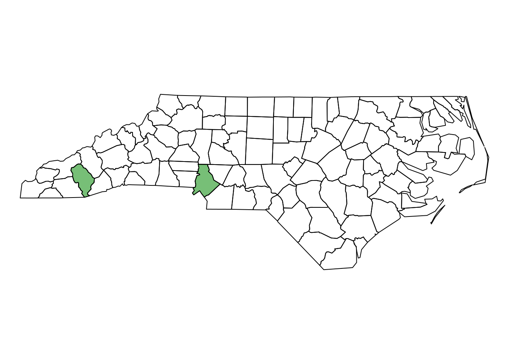
sf_use_s2(old) # set back
# Spherical geometry (s2) switched onimport matplotlib.pyplot as plt
names_with_s2 = nc[hit_s2].NAME.tolist()
# shapely works on the plane (sf_use_s2(FALSE))
line = shapely.from_wkt(line_wkt)
names_planar = nc[nc.intersects(line)].NAME.tolist()
print(names_planar)
# ['Macon', 'Sampson', 'Cherokee', 'Cumberland', 'Union', 'Anson', 'Hoke', 'Duplin', 'Richmond', 'Clay', 'Scotland']
diff = [n for n in names_with_s2 if n not in names_planar]
print(diff)
# ['Jackson', 'Mecklenburg']
fig, ax = plt.subplots()
nc.plot(ax=ax, facecolor="none", edgecolor="black", linewidth=0.5)
nc[nc.NAME.isin(diff)].plot(ax=ax, color="#00880088")
ax.set_axis_off()
plt.show()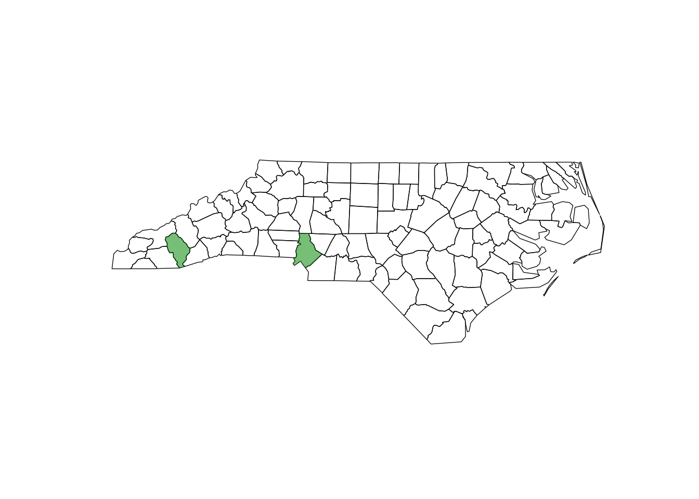
Exercise 7.3
Plot the two different lines in a single plot; note that R will plot a straight line always straight in the projection currently used; st_segmentize can be used to add points on straight line, or on a great circle for ellipsoidal coordinates.
par(mar = rep(.1, 4))
plot(st_geometry(nc))
plot(st_geometry(nc)[nc$NAME %in% diff], col = "#00880088", add = TRUE)
plot(line, add = TRUE)
plot(st_segmentize(line, units::set_units(10, km)), add = TRUE, col = 'red')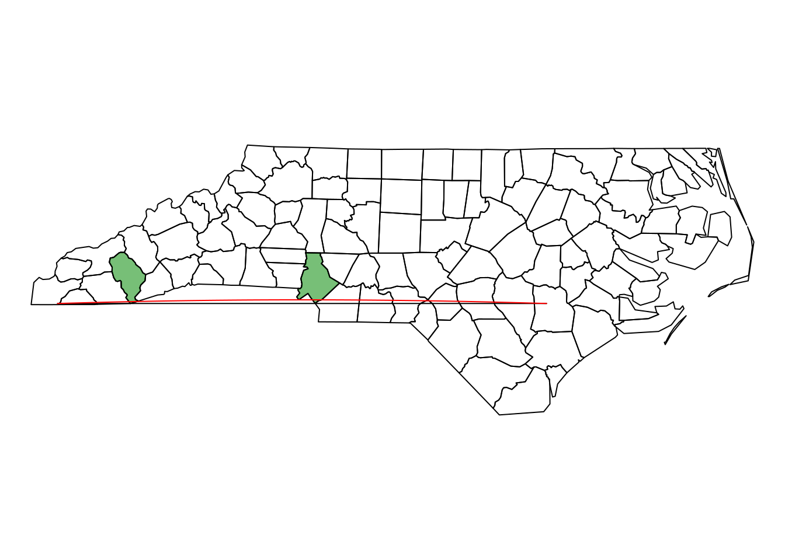
from pyproj import Geod
# points on the great circle between the end points, about every 10 km
geod = Geod(ellps="sphere")
dist = geod.inv(-84, 35, -78, 35)[2]
n = int(dist // 10000)
mid = geod.npts(-84, 35, -78, 35, n)
l_gc = shapely.LineString([(-84, 35)] + mid + [(-78, 35)])
fig, ax = plt.subplots()
nc.plot(ax=ax, facecolor="none", edgecolor="black", linewidth=0.5)
nc[nc.NAME.isin(diff)].plot(ax=ax, color="#00880088")
ax.plot(*line.xy, color="black")
ax.plot(*l_gc.xy, color="red")
ax.set_axis_off()
plt.show()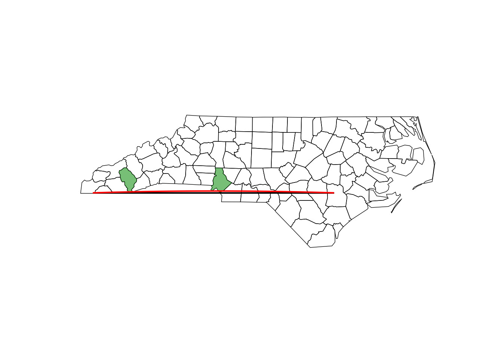
To show that the red line is curved, but only curved in plate carree, and not e.g. in an orthographic projection centered at this region, we can also plot it in an orthographic projection:
l.gc = st_segmentize(line, units::set_units(10, km))
l.pc = st_segmentize(st_set_crs(line, NA), 0.1) |> st_set_crs(st_crs(l.gc))
o = st_crs("+proj=ortho +lon_0=-80 +lat_0=35")
plot(st_transform(st_geometry(nc), o), axes = TRUE)
plot(st_transform(st_geometry(nc), o)[nc$NAME %in% diff],
col = "#00880088", add = TRUE)
plot(st_transform(l.gc, o), col = 'red', add = TRUE)
plot(st_transform(l.pc, o), col = 'black', add = TRUE)
plot(st_transform(line, o), col = 'green', add = TRUE)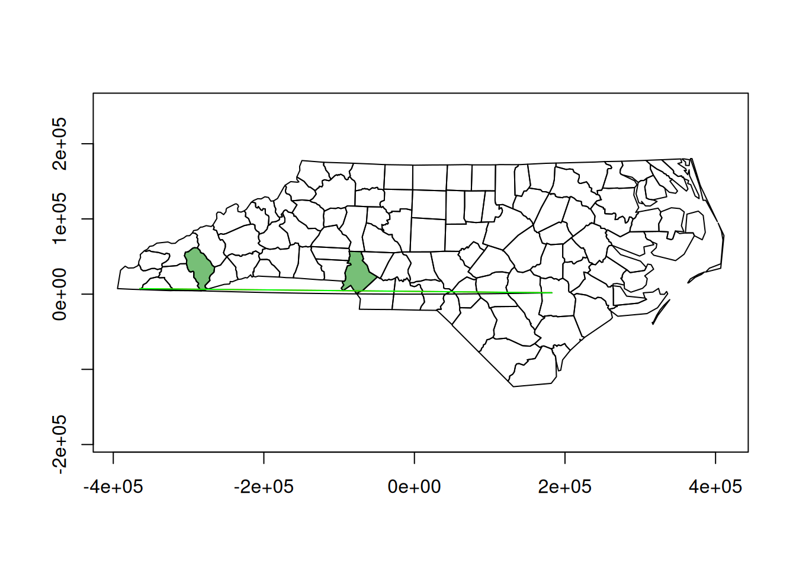
o = "+proj=ortho +lon_0=-80 +lat_0=35"
l_pc = shapely.segmentize(line, 0.1) # points every 0.1 degree, planar
def to_ortho(geom):
return gpd.GeoSeries([geom], crs=nc.crs).to_crs(o).iloc[0]
nc_o = nc.to_crs(o)
fig, ax = plt.subplots()
nc_o.plot(ax=ax, facecolor="none", edgecolor="black", linewidth=0.5)
nc_o[nc_o.NAME.isin(diff)].plot(ax=ax, color="#00880088")
ax.plot(*to_ortho(l_gc).xy, color="red")
ax.plot(*to_ortho(l_pc).xy, color="black")
ax.plot(*to_ortho(line).xy, color="green")
plt.show()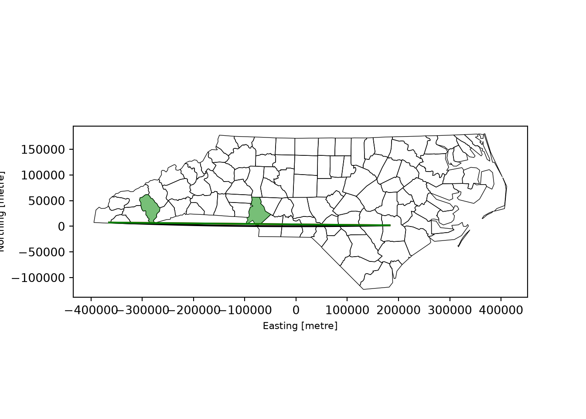
The fact that the unsegmented line line is straight (R plotted it as straight, it contains only the two endpoints) and that it covers the red line supports that in this plot, the great circle line (red) is plotted straight, and the “straight in plate carree” line is not.
Exercise 7.4
NDVI, normalized differenced vegetation index, is computed as (NIR-R)/(NIR+R), with NIR the near infrared and R the red band. Read the L7_ETMs.tif file into object x, and distribute the band dimensions over attributes by split(x, "band"). Then, add attribute NDVI to this object by using an expression that uses the NIR (band 4) and R (band 3) attributes directly.
library(stars)
(x = read_stars(system.file("tif/L7_ETMs.tif", package = "stars")))
# stars object with 3 dimensions and 1 attribute
# attribute(s):
# Min. 1st Qu. Median Mean 3rd Qu. Max.
# L7_ETMs.tif 1 54 69 68.91242 86 255
# dimension(s):
# from to offset delta refsys point x/y
# x 1 349 288776 28.5 SIRGAS 2000 / ... FALSE [x]
# y 1 352 9120761 -28.5 SIRGAS 2000 / ... FALSE [y]
# band 1 6 NA NA NA NA
(x.spl = split(x)) # note the names of the attributes
# stars object with 2 dimensions and 6 attributes
# attribute(s):
# Min. 1st Qu. Median Mean 3rd Qu. Max.
# X1 47 67 78 79.14772 89 255
# X2 32 55 66 67.57465 79 255
# X3 21 49 63 64.35886 77 255
# X4 9 52 63 59.23541 75 255
# X5 1 63 89 83.18266 112 255
# X6 1 32 60 59.97521 88 255
# dimension(s):
# from to offset delta refsys point x/y
# x 1 349 288776 28.5 SIRGAS 2000 / ... FALSE [x]
# y 1 352 9120761 -28.5 SIRGAS 2000 / ... FALSE [y]
x.spl$NDVI = (x.spl$X4 - x.spl$X3)/(x.spl$X4 + x.spl$X3)
plot(x.spl["NDVI"])import rioxarray
# L7_ETMs.tif, copied from the stars R package into data/;
# convert to float to avoid integer overflow in the differences
x = rioxarray.open_rasterio("data/L7_ETMs.tif").astype("float64")
x_spl = x.to_dataset(dim="band") # bands become variables
x_spl = x_spl.rename({b: f"X{b}" for b in x_spl.data_vars})
x_spl<xarray.Dataset> Size: 6MB
Dimensions: (y: 352, x: 349)
Coordinates:
* y (y) float64 3kB 9.121e+06 9.121e+06 ... 9.111e+06 9.111e+06
* x (x) float64 3kB 2.888e+05 2.888e+05 ... 2.987e+05 2.987e+05
spatial_ref int64 8B 0
Data variables:
X1 (y, x) float64 983kB 69.0 69.0 63.0 60.0 ... 98.0 100.0 100.0
X2 (y, x) float64 983kB 56.0 57.0 52.0 45.0 ... 89.0 90.0 91.0
X3 (y, x) float64 983kB 46.0 49.0 45.0 35.0 ... 64.0 64.0 64.0
X4 (y, x) float64 983kB 79.0 75.0 66.0 66.0 ... 14.0 14.0 13.0
X5 (y, x) float64 983kB 86.0 88.0 75.0 69.0 ... 15.0 13.0 14.0
X6 (y, x) float64 983kB 46.0 49.0 41.0 38.0 ... 14.0 14.0 12.0
Attributes:
AREA_OR_POINT: Area
scale_factor: 1.0
add_offset: 0.0
x_spl["NDVI"] = (x_spl.X4 - x_spl.X3) / (x_spl.X4 + x_spl.X3)
x_spl["NDVI"].plot()
plt.show()Exercise 7.5
Compute NDVI for the L7_ETMs.tif image by reducing the band dimension, using st_apply and an a function ndvi = function(x) { (x[4]-x[3])/(x[4]+x[3]) }. Plot the result, and write the result to a GeoTIFF.
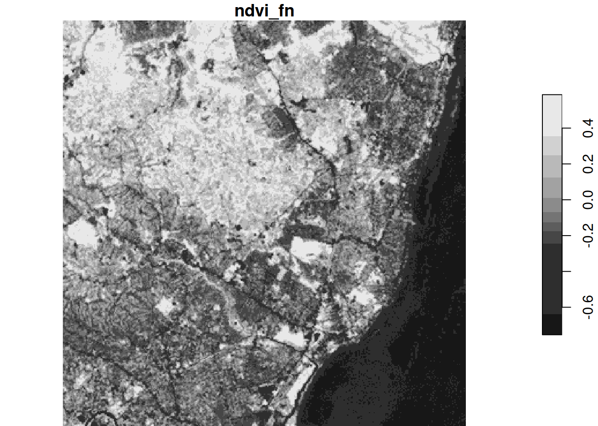
write_stars(ndvi, "ndvi.tif")import numpy as np
import xarray as xr
import tempfile, os
def ndvi_fn(v): # called for each pixel, v has the 6 band values
return (v[3] - v[2]) / (v[3] + v[2])
ndvi = xr.apply_ufunc(ndvi_fn, x, input_core_dims=[["band"]], vectorize=True)
ndvi.plot()
plt.show()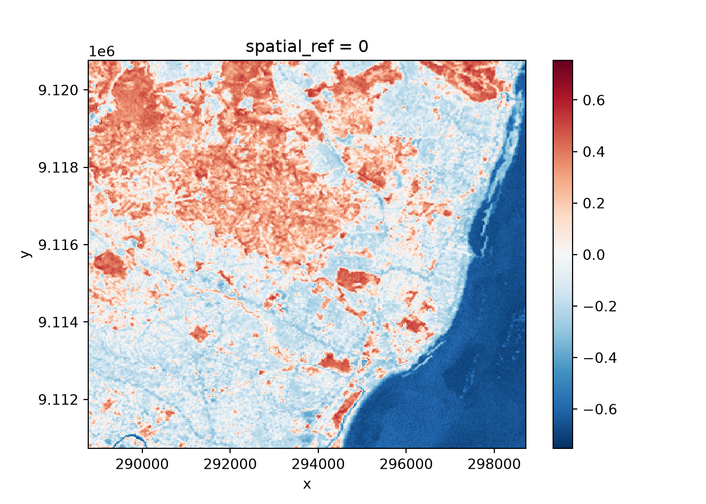
# write to a GeoTIFF (in a temporary directory)
ndvi = ndvi.rio.write_crs(x.rio.crs)
ndvi.rio.to_raster(os.path.join(tempfile.mkdtemp(), "ndvi.tif"))an alternative function is
# called once for all pixels, with the band dimension as last axis
ndvi2 = xr.apply_ufunc(lambda v: (v[..., 3] - v[..., 2]) / (v[..., 3] + v[..., 2]),
x, input_core_dims=[["band"]])
np.allclose(ndvi, ndvi2, equal_nan=True)
# TrueThis latter function can be much faster, as it is called for chunks of data rather than for individual pixels.
Exercise 7.6
Use st_transform to transform the stars object read from L7_ETMs.tif to EPSG:4326. Print the object. Is this a regular grid? Plot the first band using arguments axes=TRUE and explain why this takes such a long time.
(x_t = st_transform(x, 'EPSG:4326'))
plot(x_t[,,,1], axes = TRUE)from pyproj import Transformer
# transforming the cell centres, without resampling, gives 2-D coordinate arrays
X, Y = np.meshgrid(x.x.values, x.y.values)
t = Transformer.from_crs(x.rio.crs, "EPSG:4326", always_xy=True)
lon, lat = t.transform(X, Y)
# the longitude step between neighbouring cells differs between rows:
# this is not a regular grid
np.ptp(np.diff(lon, axis=1), axis=1).max()
# np.float64(1.3568907775152184e-08)the printed summary shows that this is a curvilinear grid. Plotting takes so long because for curvilinear grids, each cell is converted to a small polygon and then plotted.
Exercise 7.7
Use st_warp to warp the L7_ETMs.tif object to EPSG:4326, and plot the resulting object with axes=TRUE. Why is the plot created much faster than after st_transform?
from matplotlib.patches import Rectangle
x_w = x.rio.reproject("EPSG:4326") # warp to a new regular grid
x_w = x_w.where(x_w != x_w.rio.nodata)
fig, ax = plt.subplots()
x_w.isel(band=0).plot(ax=ax)
xmin, ymin, xmax, ymax = x_w.rio.bounds()
ax.add_patch(Rectangle((xmin, ymin), xmax - xmin, ymax - ymin,
fill=False, edgecolor="red"))
plt.show()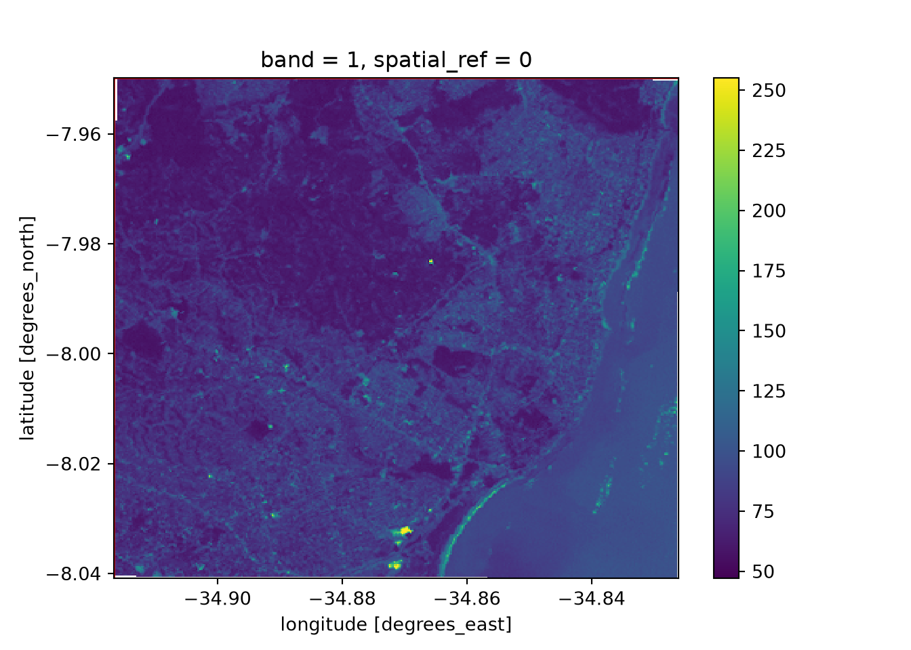
Plotting is faster now because we created a new regular grid. Note that the grid border does not align perfectly with the square formed by the bounding box (using straight lines in an equidistant rectangular projection): white grid cells indicate the misalignment due to warping/transforming.
Exercise 7.8
Using a vector representation of the raster L7_ETMs, plot the intersection with a circular area around POINT(293716 9113692) with radius 75 m, and compute the area-weighted mean pixel values for this circle. Compare the area-weighted values with those obtained by aggregate using the vector data, and by aggregate using the raster data, using exact=FALSE (default) and exact=TRUE. Explain the differences.
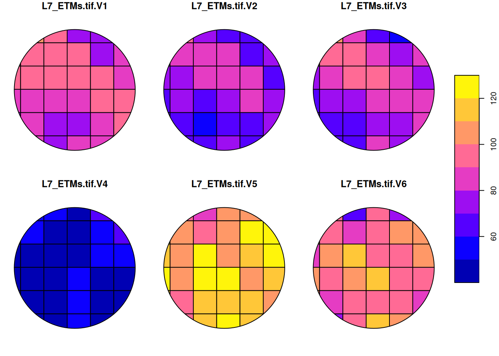
(aw = st_interpolate_aw(l7, a, mean, extensive = FALSE))
# Simple feature collection with 1 feature and 6 fields
# Attribute-geometry relationships: aggregate (6)
# Geometry type: POLYGON
# Dimension: XY
# Bounding box: xmin: 293642 ymin: 9113618 xmax: 293790 ymax: 9113766
# Projected CRS: SIRGAS 2000 / UTM zone 25S
# L7_ETMs.tif.V1 L7_ETMs.tif.V2 L7_ETMs.tif.V3 L7_ETMs.tif.V4
# 1 88.54362 73.50115 80.69708 49.98497
# L7_ETMs.tif.V5 L7_ETMs.tif.V6 geometry
# 1 111.8357 97.56707 POLYGON ((293790 9113692, 2...
(ag_vector = aggregate(l7, a, mean))
# Simple feature collection with 1 feature and 6 fields
# Geometry type: POLYGON
# Dimension: XY
# Bounding box: xmin: 293642 ymin: 9113618 xmax: 293790 ymax: 9113766
# Projected CRS: SIRGAS 2000 / UTM zone 25S
# L7_ETMs.tif.V1 L7_ETMs.tif.V2 L7_ETMs.tif.V3 L7_ETMs.tif.V4
# 1 88.0303 72.84848 79.30303 50.33333
# L7_ETMs.tif.V5 L7_ETMs.tif.V6 geometry
# 1 111.9697 96.72727 POLYGON ((293790 9113692, 2...
(ag_rasterF = st_as_sf(aggregate(x, a, mean)))
# Simple feature collection with 1 feature and 6 fields
# Geometry type: POLYGON
# Dimension: XY
# Bounding box: xmin: 293642 ymin: 9113618 xmax: 293790 ymax: 9113766
# Projected CRS: SIRGAS 2000 / UTM zone 25S
# L7_ETMs.tif.V1 L7_ETMs.tif.V2 L7_ETMs.tif.V3 L7_ETMs.tif.V4
# 1 88.6 73.55 81.1 49.55
# L7_ETMs.tif.V5 L7_ETMs.tif.V6 geometry
# 1 112.1 98.4 POLYGON ((293790 9113692, 2...
(ag_rasterT = st_as_sf(aggregate(x, a, mean, exact = TRUE)))
# Simple feature collection with 1 feature and 6 fields
# Geometry type: POLYGON
# Dimension: XY
# Bounding box: xmin: 293642 ymin: 9113618 xmax: 293790 ymax: 9113766
# Projected CRS: SIRGAS 2000 / UTM zone 25S
# L7_ETMs.tif.V1 L7_ETMs.tif.V2 L7_ETMs.tif.V3 L7_ETMs.tif.V4
# 1 88.54362 73.50115 80.69708 49.98497
# L7_ETMs.tif.V5 L7_ETMs.tif.V6 geometry
# 1 111.8357 97.56707 POLYGON ((293790 9113692, 2...
rbind(area_w = st_drop_geometry(aw),
agg_vec = st_drop_geometry(ag_vector),
agg_rasF = st_drop_geometry(ag_rasterF),
agg_rasT = st_drop_geometry(ag_rasterT))
# L7_ETMs.tif.V1 L7_ETMs.tif.V2 L7_ETMs.tif.V3
# area_w 88.54362 73.50115 80.69708
# agg_vec 88.03030 72.84848 79.30303
# agg_rasF 88.60000 73.55000 81.10000
# agg_rasT 88.54362 73.50115 80.69708
# L7_ETMs.tif.V4 L7_ETMs.tif.V5 L7_ETMs.tif.V6
# area_w 49.98497 111.8357 97.56707
# agg_vec 50.33333 111.9697 96.72727
# agg_rasF 49.55000 112.1000 98.40000
# agg_rasT 49.98497 111.8357 97.56707
all.equal(st_drop_geometry(aw), st_drop_geometry(ag_rasterT),
check.attributes = FALSE)
# [1] TRUE# vector representation of the raster: one square polygon per pixel
xs, ys = x.x.values, x.y.values
dx, dy = (abs(r) / 2 for r in x.rio.resolution())
X, Y = np.meshgrid(xs, ys)
cols = [f"V{i}" for i in range(1, 7)]
l7 = gpd.GeoDataFrame(
x.values.reshape(6, -1).T, columns=cols,
geometry=shapely.box(X.ravel() - dx, Y.ravel() - dy,
X.ravel() + dx, Y.ravel() + dy),
crs=x.rio.crs)
a = shapely.Point(293716, 9113692).buffer(74, quad_segs=30)
sub = l7.iloc[l7.sindex.query(a, predicate="intersects")]
inter = sub.geometry.intersection(a)
fig, ax = plt.subplots()
gpd.GeoDataFrame(sub[["V1"]], geometry=inter).plot(ax=ax, column="V1", legend=True)
plt.show()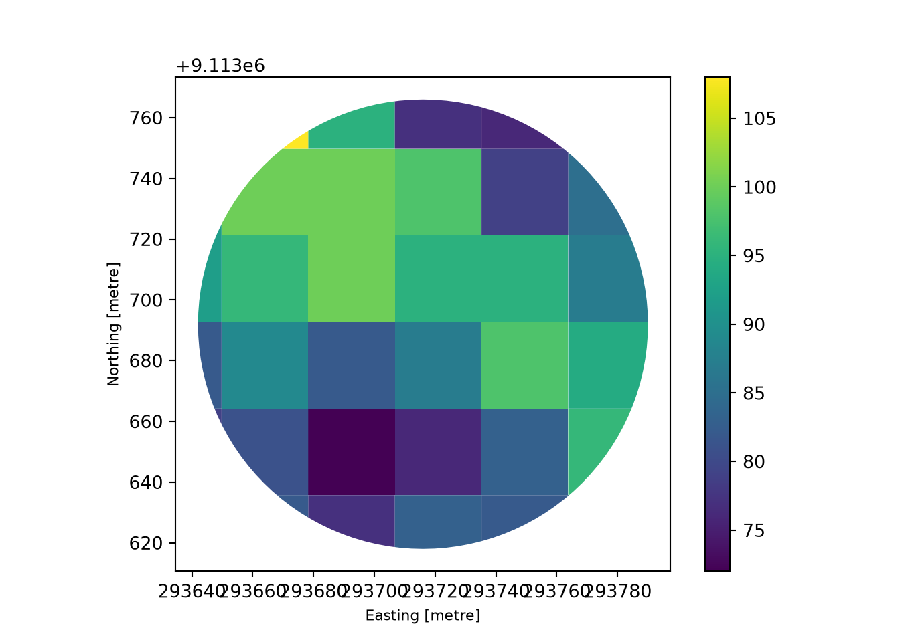
# area-weighted mean, over the intersections
w = inter.area.values
aw = (sub[cols].values * w[:, None]).sum(axis=0) / w.sum()
# aggregate on vector data: unweighted mean of all intersecting pixels
ag_vector = sub[cols].mean().values
# aggregate on raster data: only pixels with centre in the circle
ag_rasterF = sub[sub.geometry.centroid.within(a)][cols].mean().values
# exact = TRUE: area-weighted, as aw
ag_rasterT = aw
res = pd.DataFrame([aw, ag_vector, ag_rasterF, ag_rasterT], columns=cols,
index=["area_w", "agg_vec", "agg_rasF", "agg_rasT"])
res
# V1 V2 V3 V4 V5 V6
# area_w 88.543623 73.501150 80.697084 49.984971 111.835703 97.567073
# agg_vec 88.030303 72.848485 79.303030 50.333333 111.969697 96.727273
# agg_rasF 88.600000 73.550000 81.100000 49.550000 112.100000 98.400000
# agg_rasT 88.543623 73.501150 80.697084 49.984971 111.835703 97.567073
np.allclose(res.loc["area_w"], res.loc["agg_rasT"])
# TrueArea-weighted interpolation computes the area-weighted mean of the areas shown in the plot; aggregate on the vector values computes the unweighted mean over all polygonized pixels that intersect with the circle (black lines); aggregate on the raster values only averages (unweighted) the cells with pixel centers intersecting with the circle (light red):
fig, ax = plt.subplots()
sub.plot(ax=ax, facecolor="none", edgecolor="black", linewidth=0.5)
ax.plot(*a.exterior.xy, color="red")
in_circle = sub[sub.geometry.centroid.within(a)]
in_circle.plot(ax=ax, color="#ff000066")
ax.plot(in_circle.geometry.centroid.x, in_circle.geometry.centroid.y, "k+")
plt.show()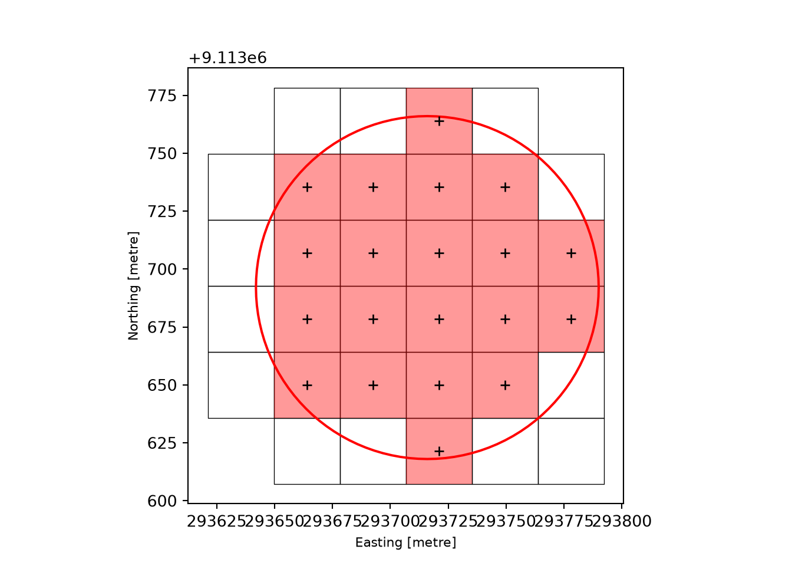